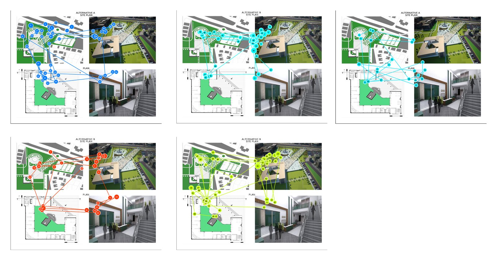
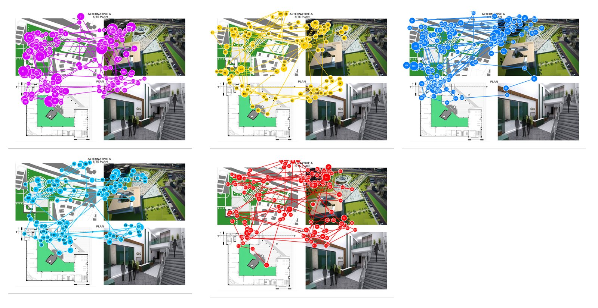
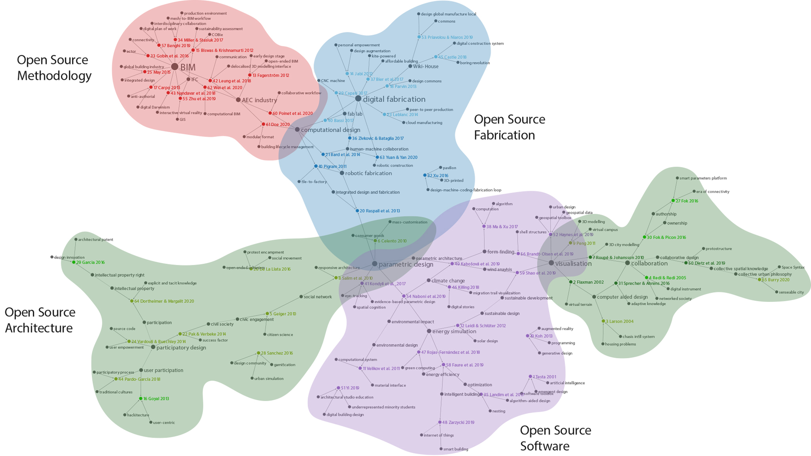
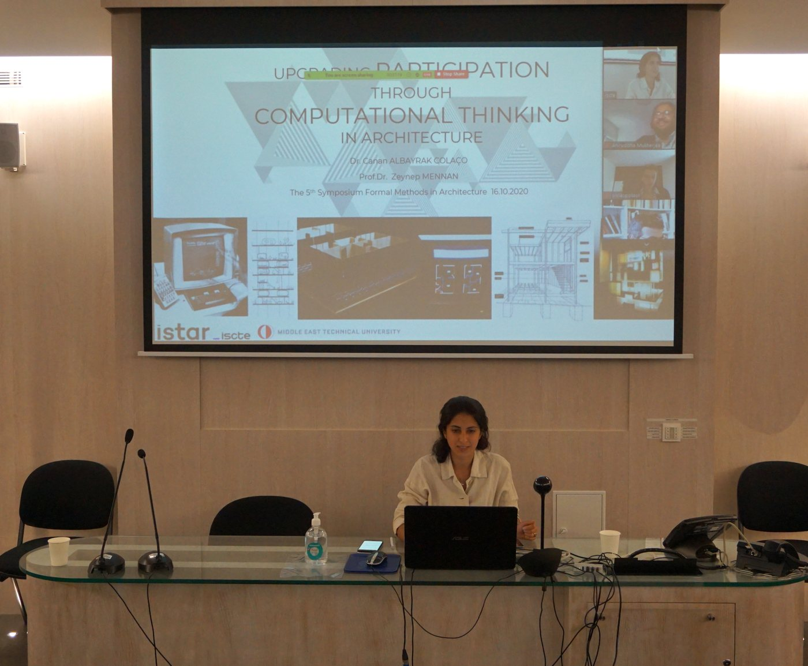
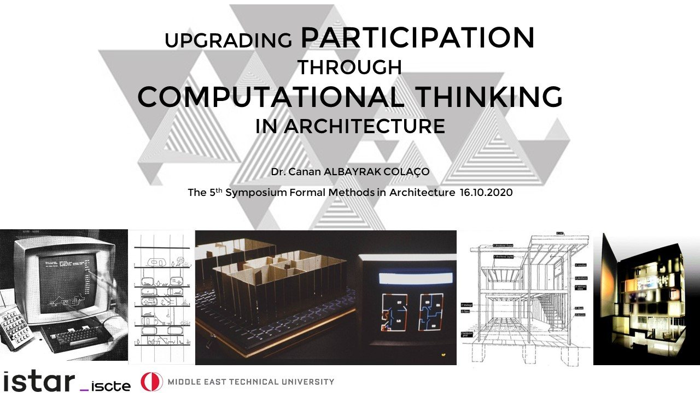
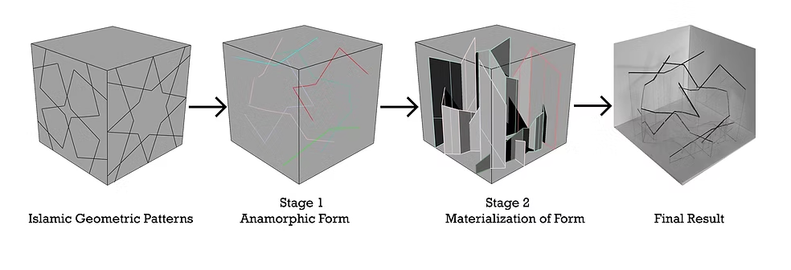
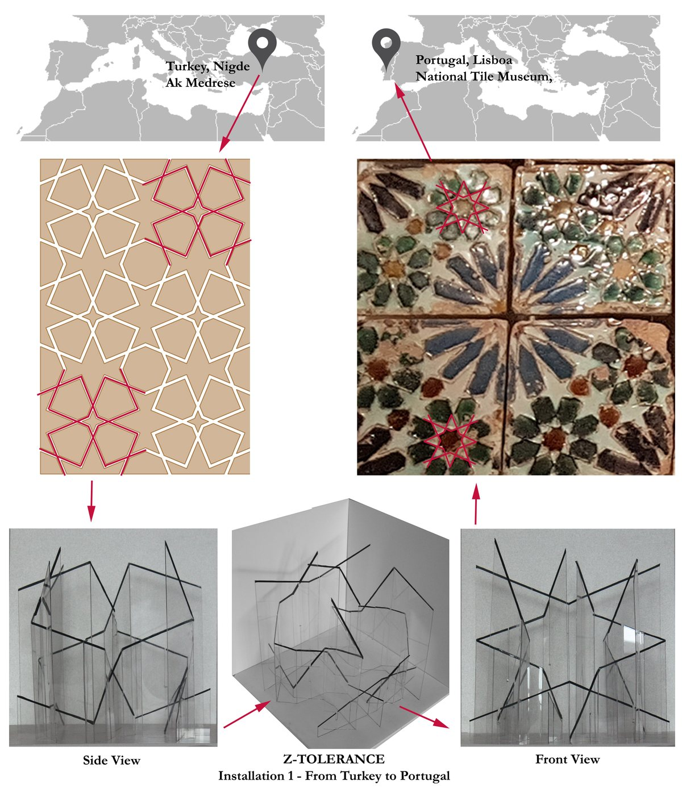

Before UX, my PhD research looked at how people see, think and take part in design. I worked with eye-tracking, network analysis, participatory methods, computational design, and user-centered design, and I still use them every day to understand users.
Canan Albayrak Colaço & Cengiz Acartürk · Design Computing and Cognition ’18 · Springer, 2019


I designed an eye-tracking experiment with 38 participants, 19 graduate architecture students and 19 students from other disciplines, who all looked at the same architectural drawings. I compared gaze duration, gaze count and gaze-plot patterns to see how each group perceives, interprets and evaluates what it sees.
Why it matters for UX · The same screen is read very differently depending on who is looking. Experts and novices need different entry points, which is why I research real users instead of designing for myself.
[Authors] · [Venue, Year]
How has open source changed the way architecture is designed? I used automated keyword extraction across [N] papers and mapped them as a network. Four groups emerged: open source software, methodology, architecture and fabrication.
Why it matters for UX · Turning a large, messy body of research into a clear structure is the same skill as affinity mapping user interviews: let the patterns show, then name them.

Canan Albayrak de Brito Colaço & Zeynep Mennan · Formal Methods in Architecture · Springer, 2021 · presented at the 5th Symposium Formal Methods in Architecture, 2020
This paper traces where design participation and design computation meet in architecture, from the 1971 Design Participation Conference to today, and argues that computational thinking can open the design process to a much wider range of people.
Why it matters for UX · Bringing non-designers into the process is the core of participatory and co-design. It is how I involve users and stakeholders in decisions, not just in testing.


This research explores how migration issues can be represented through three-dimensional abstract forms. I designed and fabricated three installation pieces for Z-tolerance, an exhibition I proposed to raise awareness of current migration issues in Europe. The design process was built specifically so it could represent different migration issues: alongside parametric design, it draws on Islamic geometric patterns and anamorphic perspective.

